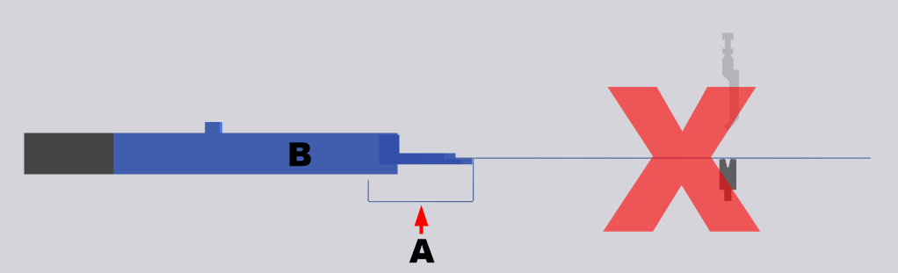

In diesem Dialog können Kompensationseinstellungen zu jedem Biegeprozess Als Biegeprozess werden alle Handlungen oder Abläufe bezeichnet, die für das Biegen eines oder mehrerer Biegungen notwendig sind. vorgenommen werden.
- Vorteil: Die Genauigkeit wird für die jeweiligen Biegeprozesse erhöht.
- Nachteil: Die Zeit für das Biegen eines Teils kann sich dadurch erheblich erhöhen.
NOTE: Nach einem automatischen Zuweisen der Kompensation, werden diese Einstellungen wieder überschrieben.
Diese Optionen stehen nur bei folgenden Maschinen zur Verfügung, wenn die entsprechende Option im Administrator aktiviert wurde:
- Xpert: Die Bombierung Ist ein System für den Ausgleich von Abweichungen, die auf ein Durchbiegen von Ober-und Unterbalken während des Biegeprozesses zurückzuführen sind. kann dynamisch und statisch ausgeführt werden.
- Xact: Die Bombierung kann nur statisch ausgeführt werden.
Blechdickenkompensation
Die Einstellungen in diesem Bereich bestimmen, wie Schwankung in der Blechdicke ausgeglichen werden.
- Aus
- Ein
- Übernehmen
Die Kompensation der Blechdicke ist für den gewählten Prozess ausgeschaltet.
Die Kompensation der Blechdicke ist für den gewählten Prozess eingeschaltet.
Die Blechdickenkompensation übernimmt den gemessenen Wert vom Prozess, welcher in der Option Übernehmen von Prozess angegeben ist.
Bestimmt den Prozess, von dem der gemessene Kompensationswert für den gewählten Prozess übernommen wird.
NOTE: Es können nur Prozesse ausgewählt werden, bei denen der Modus auf Ein eingestellt ist.
- Standard
- Nie anhalten
-
CAUTION:
Kollisionsgefahr!
Verwenden Sie diese Option nie bei gebogenen Schenkeln (A) unterhalb des Anschlagfingers (B). Der Schenkel kann mit dem Anschlagfinger kollidieren und das Teil zurückziehen oder verbiegen.
Fig.: Gebogene Schenkel unterhalb des Anschlagfingers

Dies ist die Standardeinstellung für das Stösselverhalten.
Ist ein Rückzug Als Rückzug wird die Rückwärtsbewegung des Anschlagarms bezeichnet, um eine Kollision des Anschlagfingers mit dem Biegeteil zu verhindern. Die Rückzugbewegung wird ausgeführt, nachdem das Biegeteil zwischen Ober- und Unterwerkzeug geklemmt wurde. programmiert, hält der Stössel beim Klemmpunkt an und führt vor dem Biegen den Rückzug der Anschläge aus.
Ist ein Rückzug programmiert, kann die Messung der Blechdicke für den gewählten Prozess scheitern! Verwenden Sie für diesen Fall das Attribut Nie anhalten.
Ist ein Rückzug programmiert, hält der Stössel beim Klemmpunkt nicht an, um die Messung der Blechdicke für die Kompensation zu gewährleisten. Der Rückzug wird trotzdem ausgeführt!
Attention! Das Anwenden der Funktion Automatisch setzt die Option Statische Bombierung bei Xpert-Maschinen wieder auf die Standardeinstellung Dynamische Bombierung zurück.
- Statisch
- Dynamisch
Der Druck wird anhand der Presskraft berechnet und eingestellt.
Der Druck ist bereits aktiv, wenn der Stössel den OT verlässt und bleibt bis zum Ende der Biegung Die Biegung ist ein Element der Profilprogrammierung und bezeichnet eine Formänderung im Werkstück. Einer Biegung können mehrere Attribute zugeordnet werden: Schenkellänge, Biegewinkel, Biegeradius (optional), Anbiegewinkel (optional), zusätzliche Attribute (optional). Eine Biegung kann aus mehreren Biegeprozessen bestehen. bestehen.
Die CNC stellt den Druck automatisch ein. Je mehr Presskraft desto mehr Druck wird auch für die Bombierung erzeugt. Der Druck der Bombierung steht ab Klemmpunkt bis Ende der Biegung an.